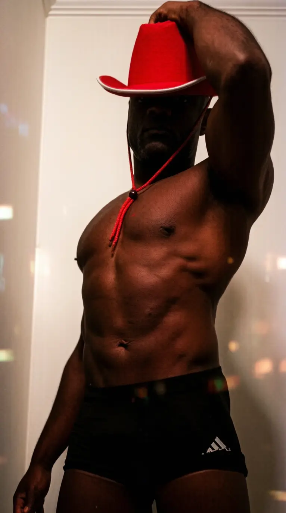

Entertainment by Michael
Michael is based in the Charleston area and works Mount Pleasant parties all the time, from rental houses in the Old Village to condos off Coleman Boulevard. He brings the show to you, it runs up to 90 minutes, and it costs $200, paid on arrival in cash, Venmo or Cash App. He does brunch parties and late nights, and last-minute bookings are welcome. Reach him through Michael At Your Place or at (843) 360-9438.
Book Michael Call or Text1Nightlife Lives on Shem Creek
Shem Creek is the center of Mount Pleasant nightlife, with decks hanging over the water and shrimp boats drifting past. Red's Ice House is the classic spot for buckets of beer and sunset views, and Saltwater Cowboys has a rooftop deck that fills up as the sun goes down. For something dressier, Tavern & Table pours good cocktails on a waterfront patio. Want to bar-hop into downtown afterward? Party Charleston covers the bars across the bridge.
2Eats From the Creek to Sullivan's
Start with a seafood dinner on the creek, then branch out. Page's Okra Grill is a local favorite for shrimp and grits and big southern brunch plates. A short drive puts you on Sullivan's Island, where The Obstinate Daughter serves pizza, pasta and raw bar dishes and Home Team BBQ keeps things casual with smoked meats and frozen drinks. For more creekside picks, Shem Creek Restaurants lists the whole strip.
3Boat Charters Leave Right From the Creek
Mount Pleasant is built for boat days. Self-drive pontoons from Shem Creek Boat Rentals let your group cruise to Crab Bank and the harbor, and captained charters handle the navigating so everyone can sip. This custom charter can even run a booze cruise to Saltwater Cowboys, and Charleston Harbor Tours covers the big scenic cruises.


4Candle Making Close to the Rental
Candle classes pop up at breweries and studios all around East Cooper. Classpop lists sessions across Mount Pleasant and downtown and can book private group pours, so you choose the scents and the playlist.
5Kayaking Shem Creek and the Marsh
Paddling Shem Creek at high tide is one of the prettiest things you can do here. Coastal Expeditions rents kayaks and paddleboards and runs guided tours from the creek, and Nature Adventures Outfitters leads dolphin-friendly paddles through the marsh. Go early, then grab lunch on the docks.
6Picnics With a Marsh View
Shem Creek Park's boardwalk and the Pitt Street Bridge in the Old Village are both prime picnic spots with wide marsh views. Book a styled setup like this luxury bachelorette picnic, or bring your own blankets and order platters to go.
7Yoga Before the Boat
Mount Pleasant has strong studios for a group class. CorePower Yoga Mount Pleasant runs heated flows with mat rentals and showers, while Yoga Daily and Shem Creek Yoga keep things smaller and calmer. A private sunrise session at the rental is another easy add.
The Short Guide to Mount Pleasant
Friday: Sunset drinks on the Shem Creek decks, then dinner on the water.
Saturday: Morning paddle or yoga, an afternoon boat charter, then Michael at the house before a night out.
Sunday: Brunch at Page's Okra Grill and a beach walk on Sullivan's Island before heading home.